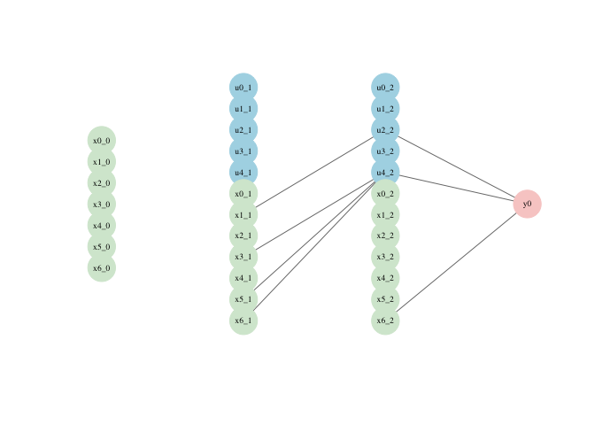
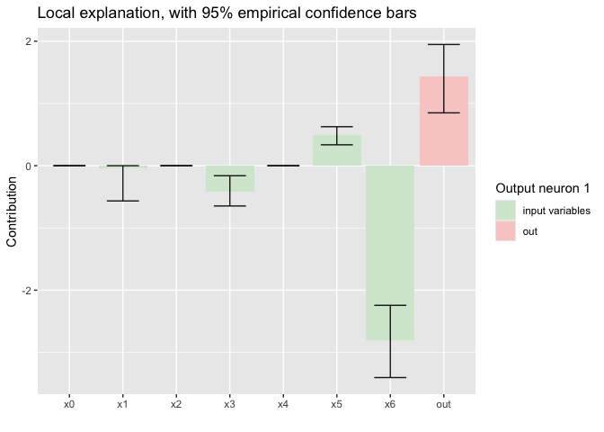

The package implements LBBNN (Latent Binary Bayesian Neural Networks) (https://openreview.net/pdf?id=d6kqUKzG3V) in R using the LibTorch backend via the Torch package. Currently, standard LBBNNs are implemented, using the local reparametrization tricks and optionally normalizing flows. In addition, the input-skip architecture is also implemented. https://arxiv.org/abs/2503.10496).
Installation
You can install the development version of LBBNN from GitHub with:
# install.packages("pak")
pak::pak("LarsELund/LBBNN")Example
This example demonstrates how to implement a simple feed forward LBBNN on a small dataset containing morphological features of two types of raisins. The raisin dataset is included in the package.
The get_dataloaders() function takes a data.frame object, and transforms it to a tensor_dataset, which can be used in a torch_dataloader object. This enables automatic mini-batching and parallel data loading.
The arguments define the proportion of data to be used for training vs validation in addition to the batch sizes for the respective dataloaders.
library(LBBNN)
loaders <- get_dataloaders(raisin_dataset, train_proportion = 0.8,
train_batch_size = 720, test_batch_size = 180)
train_loader <- loaders$train_loader
test_loader <- loaders$test_loaderImportant hyperparameters include the size of the network, priors, and initializations. When defining an ‘lbbnn_net’ object, the sizes argument is a vector of integers, where the first entry represents the number of features (7 in this case), the subsequent entries are the widths of the hidden layers, and the last entry the number of outputs.
The prior argument defines the inclusion priors for each layer, whereas std refers to the standard deviation of the weight priors. inclusion_inits refers to the initialization of the variationa linclusion parameters. It controls the initial density of the network.
problem <- 'binary classification'
sizes <- c(7, 5, 5, 1)
inclusion_priors <-c(0.5, 0.5, 0.5)
stds <- c(1, 1, 1)
#inclusion_inits <- matrix(rep(c(-10, 15), 3),nrow = 2, ncol = 3)
inclusion_inits <- 'dense'
device <- 'cpu' #can also be mps or gpu.Below we define the model. We use the input_skip architecture in this case, but not normalizing flows.
torch::torch_manual_seed(0)
model_input_skip <- lbbnn_net(problem_type = problem,sizes = sizes,prior = inclusion_priors,
inclusion_inits = inclusion_inits,input_skip = TRUE,std = stds,
flow = FALSE,device = device)The function lbbnn_train is used to train the model. In this case, for 800 epochs with a learning rate of 0.01. During training, the loss and accuracy can be displayed at each epoch.
results_input_skip <- suppressMessages(train_lbbnn(epochs = 800,LBBNN = model_input_skip, lr = 0.01,train_dl = train_loader,device = device))
#save the model
#torch::torch_save(model_input_skip$state_dict(),
#paste(getwd(),'/R/saved_models/README_input_skip_example_model.pth',sep = ''))Below, validate_lbbnn is used to test the model on unseen data. We provide the test_loader containing the data set aside during training.
validate_lbbnn(LBBNN = model_input_skip,num_samples = 100,test_dl = test_loader,device)
#> $accuracy_full_model
#> [1] 0.8611111
#>
#> $accuracy_sparse
#> [1] 0.8611111
#>
#> $density
#> [1] 0.06542056
#>
#> $density_active_path
#> [1] 0.06542056
#validate_lbbnn(LBBNN = model_flows,num_samples = 1000,test_dl = test_loader,device)The package provides utilities for both global and local explanations. Global explanations describe how the models behaves overall across the entire dataset. The function plot, with argument type = ‘global’ visualizes the structure of the network, when only weights within active paths are included, where an active path is a path from an input, to the output, either directly or through one or more hidden neurons.
plot(model_input_skip,type = 'global',vertex_size = 13,edge_width = 0.6,label_size = 0.6)
We see that only 4 of the 7 input variables are included..
The summary function provides further detail into inclusion probabilities from different layers.
summary(model_input_skip)
#> Summary of lbbnn_net object:
#> -----------------------------------
#> Shows the number of times each variable was included from each layer
#> -----------------------------------
#> Then the average inclusion probability for each input from each layer
#> -----------------------------------
#> The final column shows the average inclusion probability across all layers
#> -----------------------------------
#> L0 L1 L2 a0 a1 a2 a_avg
#> x0 0 0 0 0.073 0.064 0.053 0.067
#> x1 0 1 0 0.074 0.225 0.066 0.142
#> x2 0 0 0 0.071 0.068 0.051 0.068
#> x3 0 1 0 0.089 0.207 0.106 0.144
#> x4 0 0 0 0.061 0.076 0.044 0.066
#> x5 0 1 0 0.060 0.204 0.195 0.138
#> x6 0 1 1 0.069 0.277 0.992 0.247
#> The model took 9.92 seconds to train, using cpuLocal explanations aim to explain a model’s prediction for a specific observation by quantifying how each input feature influences that prediction. Below we show one example. Unlike other methods like SHAP and LIME, our local explanations are intrinsic, and we also get uncertainty around the explanations.
x <- train_loader$dataset$tensors[[1]] #grab the dataset
ind <- 42
data <- x[ind,] #plot this specific data-point
plot(model_input_skip,type = 'local',data = data,num_samples = 100)
The residual function computes the residuals: y_true - y_predicted
residuals(model_input_skip)[1:10]
#> [1] -0.16605029 0.08027482 -0.06073312 0.06734884 0.11117309 -0.06302989
#> [7] 0.02952594 0.14954549 -0.06676923 0.03041196coef gives the local explanations average over multiple samples:
coef(model_input_skip,dataset = train_loader,inds = c(2,3,4,5,6))
#> lower mean upper
#> x0 0.0000000 0.0000000 0.00000000
#> x1 -0.9935143 -0.6864897 -0.07549272
#> x2 0.0000000 0.0000000 0.00000000
#> x3 -0.3978343 -0.2250528 0.00000000
#> x4 0.0000000 0.0000000 0.00000000
#> x5 0.0000000 0.2754804 0.47322066
#> x6 -2.8249421 -2.0773863 -1.00955870posterior predictions:
predictions <- predict(model_input_skip,mpm = TRUE,newdata = test_loader,draws = 100)
dim(predictions) #shape is (draws,samples,classes)
#> [1] 100 180 1Print the model:
print(model_input_skip)
#>
#> ========================================
#> LBBNN Model Summary
#> ========================================
#>
#> Module Overview:
#> - An `nn_module` containing 343 parameters.
#>
#> ---------------- Submodules ----------------
#> - layers : nn_module_list # 305 parameters
#> - layers.0 : lbbnn_linear # 115 parameters
#> - layers.1 : lbbnn_linear # 190 parameters
#> - act : nn_leaky_relu # 0 parameters
#> - out_layer : lbbnn_linear # 38 parameters
#> - out : nn_sigmoid # 0 parameters
#> - loss_fn : nn_bce_loss # 0 parameters
#>
#> Model Configuration:
#> - LBBNN with input-skip
#> - Optimized using variational inference without normalizing flows
#>
#> Priors:
#> - Prior inclusion probabilities per layer: 0.5, 0.5, 0.5
#> - Prior std dev for weights per layer: 1, 1, 1
#>
#> =================================================================